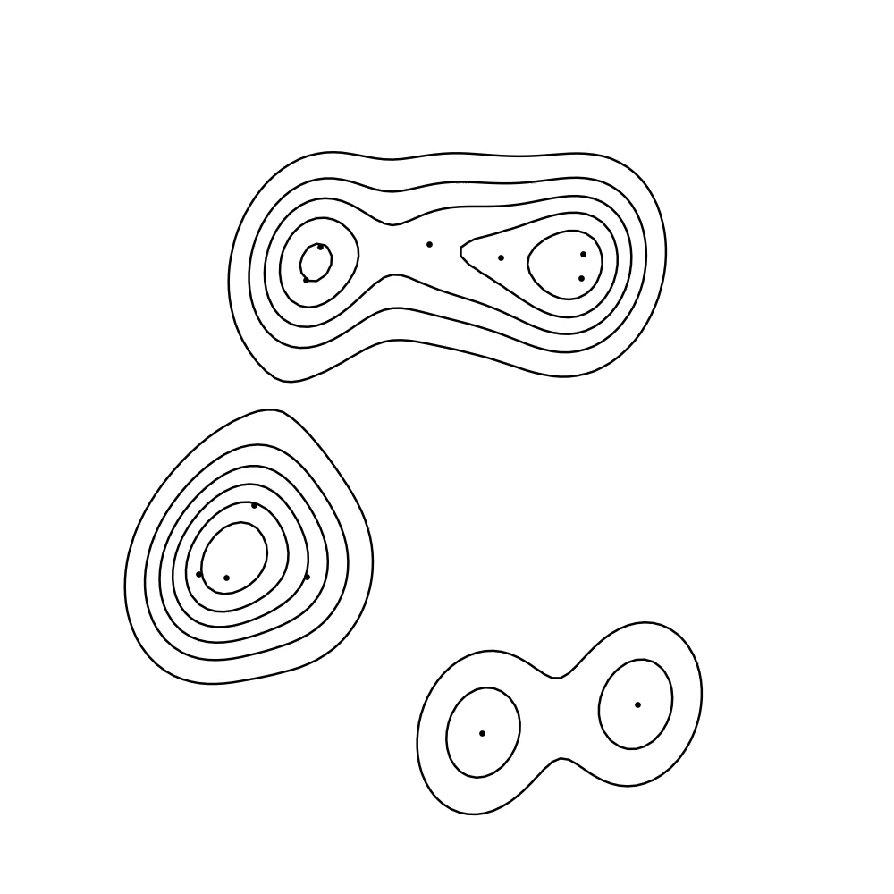

Yenho Chen
I am a PhD Student in Machine Learning at Georgia Tech, where I work with Dr. Chris Rozell. Previously, I developed a variety of statistical tools for neuroscience as a research fellow in the Machine Learning Team at the National Institute of Mental Health. Currently, my work centers on developing new computational tools that help scientists reveal and understand hidden structure in complex time-varying systems. I am broadly interested in solving real world problems by advancing the areas of deep learning, numerical optimization, and Bayesian inference.
